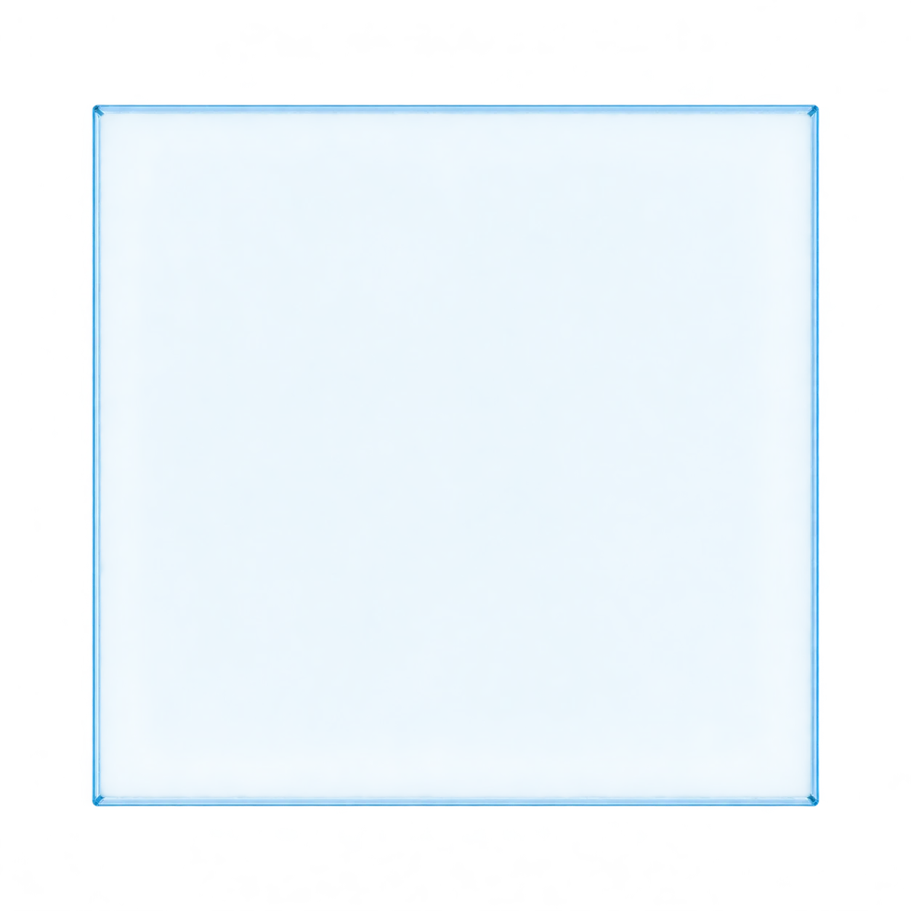

A change
of direction.
A NOTE TO BEND
5study angles
compared.
compared.
A clear path through the numbers.

NormalInterfaceIncident angle
Measured from the normal
Refracted angle
Idealized relationship
n₁ sin θ₁ = n₂ sin θ₂
Select one of the five calculated study angles